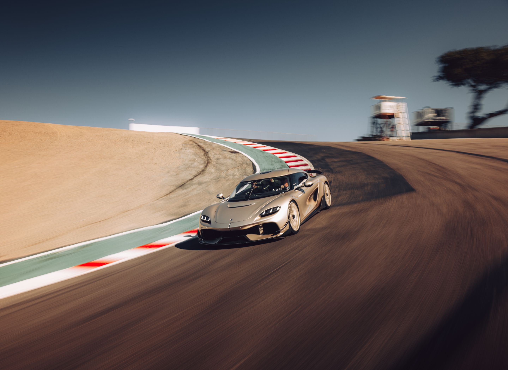
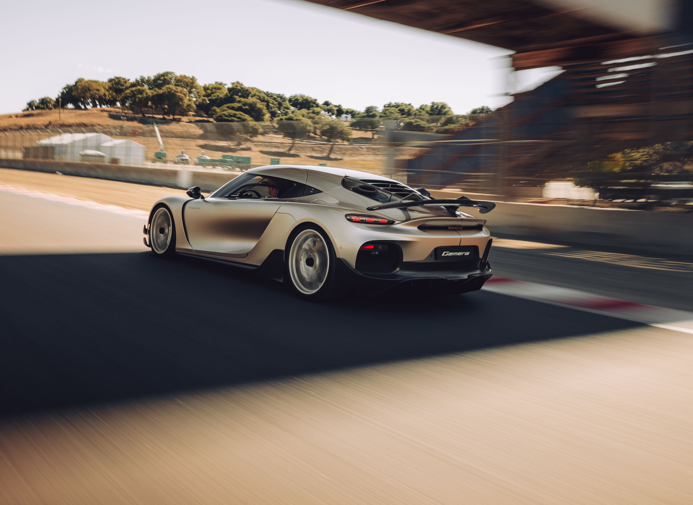
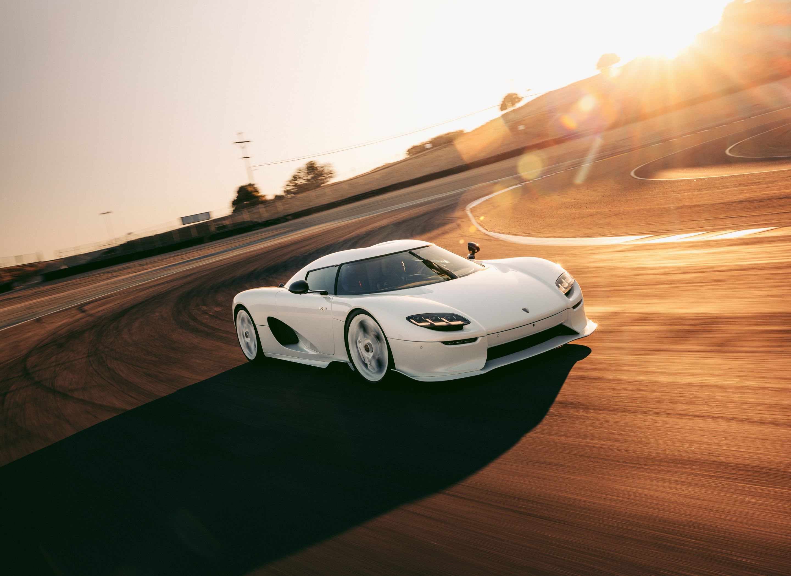

The Gemera combines the scintillating performance
of a mid-engine two-seater megacar with the practicalities
of a full four-seater car, including the luggage space! This ground-breaking
combination allows the full
Koenigsegg megacar experience to be shared with family
and friends.

The Jesko features a redesigned 5.0 litre twin-turbo
V8
engine producing 1280 hp on standard gasoline and
1600
hp on E85 biofuel (where available) alongside the
revolutionary
new 9-speed Koenigsegg Light Speed
Transmission (LST). Advanced aerodynamics
offer up to
1400 kg of downforce, making it the ultimate track weapon.


Just as powerful as its track-focused sibling,
the Jesko
Absolut is the more seamless and stealthy
of the two. Every surface element is constructed to reduce drag
or surrounding turbulence while increasing high-speed stability. With a drag
coefficient value of only 0.278 Cd, a frontal area of just 1.88 m² and a massive 1600 horsepower,
the Jesko Absolut is destined to achieve higher, more extraordinary speeds than any Koenigsegg or any other
fully homologated car before it. How fast? Time will tell. Looking at the math and our advanced simulations - it will be unbelievably fast.


The CC850 is the ideal combination of classic design and cutting-edge technology. Engineered to be the perfect driver's car,
every innovation in the CC850 is designed to enhance the driving experience. The award-winning Engage Shift System (ESS) is one such innovation, providing both a gated 6-speed manual and a 9-speed automatic
in the same transmission. The choice is yours!
Inspired by the original CC8S, the CC850 features the
classic Koenigsegg silhouette, while the interior, and
particularly the analog chronocluster,
is a work of art.